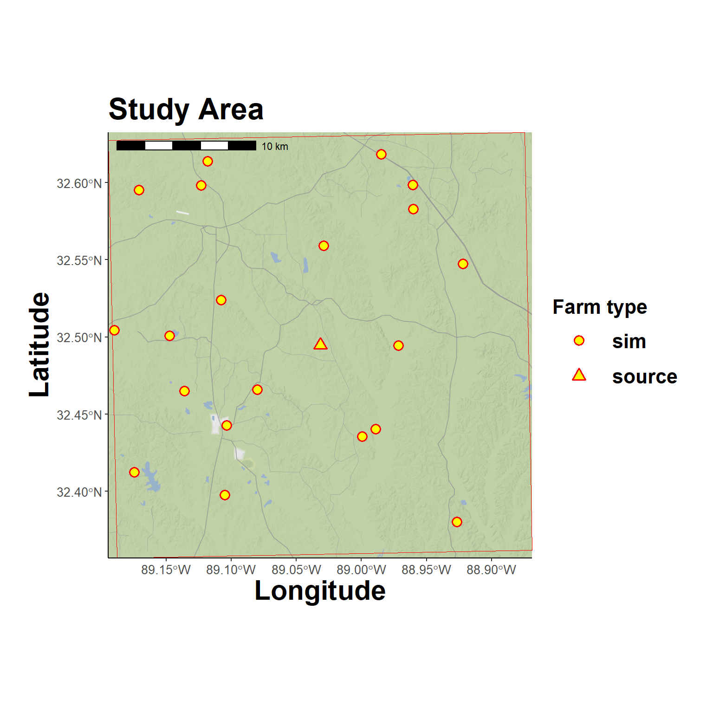

Simulate Airborne Virus Introduction and Outbreak
1 Overview
This script provides a conceptual workflow that simulates farm locations, performs atmospheric dispersion modeling from a source farm (aka, plume modeling), analyzes the plume results in a spatial temporal model, and then identifies the simulated farms most vulnerable to airborne virus introduction. The results from this forward simulation are analysed in a second script, available here, in an attempt to identify the source farms using only the information from the secondarily infected farms simulated here.
2 Preliminary Setup
Libraries
This workflow uses the renv package for package version and environmental management. The renv.lock file is included to facilitate package installation. See, renv::restore().
Core Functions
Custom functions
Hide code
source(here("R/utilities.R"))
source_dir(here("R"))Authentication
User credentials to access data repository and API resources.
Hide code
authentications <- yaml::read_yaml(here("local", "secrets.yaml"))API Registration
Stadia maps are used for backgrounds.
Hide code
register_stadiamaps(key = authentications$stadi_api)OSF Link
Models and data generated from this script are stored at the Open Science Framework (OSF) for remote access. See, this OSF Project:
Hide code
osf_auth(authentications$osf_token) # for write/admin privilegesRegistered PAT from the provided tokenHide code
osf_project_demo <- osf_retrieve_node("https://osf.io/su4yz/")
osf_project_demo$name # scratch directory on OSF EpiPlume project[1] "Demonstration Data"3 Read Configuration Parameters
Parameters for epidemiological and spatial analyses are recorded in configuration files. Loading the demonstration config file, which can be viewed here: Demo Configuration Parameters.
Hide code
cfg <- yaml::read_yaml(here("config", "demo_2025-04-21.yaml"))4 Create Study Area
From a given lat-long, the define_study_domain() function constructs a surrounding square grid at a specified extent and resolution to define a study area. The function optionally generates a specified number of simulated farms. The farms are randomly assigned within the study, based on chicken density estimated in the Gridded Livestock of the World Database (source). The more chickens at a location, the higher the probability that a random farm be placed there. The random farms are assigned a random flock size based on a possible range specified in the config file.
Hide code
study_area_args <- c(
cfg$domain, # from config
list(
seed = 123,
min_flock = 15000,
max_flock = 50000
)
)
study_area <- exec(define_study_domain, !!!study_area_args)
# attributes
str(study_area)List of 4
$ projection : chr "+proj=utm +zone=16 +north +datum=WGS84 +units=m +no_defs"
$ grid :S4 class 'SpatRaster' [package "terra"]
$ source_point:S4 class 'SpatVector' [package "terra"]
$ farm_locs :S4 class 'SpatVector' [package "terra"]Hide code
# flock sizes
range(study_area$farm_locs$flock)[1] 15861 49799flock size at source farm
For the demo, the center most farm used in defining the study area is considered the source of pathogen emission. The flock size is need for that location to estimate emission.
Hide code
source_flock_n <- values(study_area$farm_locs) %>%
filter(farm == "source") %>%
select(flock)
source_flock_n| flock |
|---|
| 19998 |
Plot Study Area
The source is the center most triangle, other farms are shown as circles.
Hide code
map_grid(study_area$grid, source_loc = study_area$farm_locs)
5 Simulate Outbreak
Dates
Random dates for initial infection and virus emission from the source farm. Assuming detection occurs 5 to 20 days after outbreaks start. That is, when workers notice that chicken death rates are exceeding the normal background rate.
Hide code
sim_dates <- random_infect_dates(year = 2020, month = 5, seed=1976)
sim_dates$release_date
[1] "2020-05-27"
$infection_date
[1] "2020-05-15"SEIR and Emission Estimates
Run SEIR model for source farm. There are a ton of parameter assumptions here to discuss. Brief explanations are provided with the config file (linked here), but far too much to include in this draft workflow.
Hide code
# virus decay, rate of decreasing viability
halflife <- calculate_half_life(viability_days = cfg$virus$viability_hours/24, # convert hours to days
viability_threshold = cfg$virus$viability_threshold)
args <- list(
beta = cfg$seir$beta,
sigma = 1 / cfg$seir$sigma, # per/day
gamma = 1 / cfg$seir$gamma, # per/day
qV = cfg$virus$qV,
Vh = cfg$poultry$house_vol,
Q = cfg$poultry$Q_m3_h * 24, # to days
lamd = log(2) / halflife, # virus decay
flock_size = source_flock_n$flock, # flock size at source farm
Ei = cfg$seir$Ei,
Ii = cfg$seir$Ii,
Ri = cfg$seir$Ri,
Vi = cfg$seir$Vi,
sim_days = cfg$seir$sim_days,
infect_date = sim_dates$infection_date # initial infection
)
seir_out <- do.call(model_seir_shedding, args)Get rate on day of emission
Hide code
# values for emission day
source_rate <- seir_out %>%
filter(datetime >= sim_dates$release_date & datetime < (sim_dates$release_date + days(1)))
# range day of release
range(source_rate$V)[1] 30.43649 48.47731View SEIR Dynamics
Top panel is SEIR result, bottom is estimated virus output at the the source farm.
Hide code
plot_ode_shed_dynamics(seir_out, date_axis = TRUE, vline = sim_dates$release_date, vline_text = "Emission")6 Plume Dispersion
A HYSPLIT model is constructed based on the simulated outbreak and source farm emission dynamics. The splitR package is used to call a HYSPLIT executable from R.
Hide code
arbitrary_hour <- 12 # noon
simulated_realease_dt <- ymd_hm(paste0(sim_dates$release_date, " ", sprintf("%02d:00", arbitrary_hour)))Run plume model
The wrap_plume_model() function saves the plume model locally, however, a copy is also saved to OSF. There are a ton of parameter assumptions here to discuss. Brief explanations are provided with the config file (linked here), but its too much for this draft workflow.
Hide code
plume_model <- wrap_plume_model(cfg, # configuration file
plume_name = "sim_demo", # name/label
rate = mean(source_rate$V), # rate from simulated outbreak
release_start = simulated_realease_dt, # release from source farm
release_end = simulated_realease_dt + hours(1), # hour long
start_time = simulated_realease_dt, # dispersion time same as emission
end_time = simulated_realease_dt + hours(24) # dispersion end
)
# copy to OSF for others to access (~500kb)
osf_upload(osf_project_demo, path = here("local/demo_run/plume/sim_demo_model.rds"))Download plume model from OSF
Hide code
osf_id <- osf_project_demo %>%
osf_ls_files() %>%
filter(name == "sim_demo_model.rds")
osf_download(osf_id,
path = here("local/temp"),
conflicts = "overwrite")Read plume model
Hide code
plume_model <- readRDS(here("local/temp/sim_demo_model.rds"))View complete simulated dispersion
Full extent of plume
Hide code
map_grid2(study_area$grid, plume_model$disp_df, group_col = "particle_i", vector_type = "point", grid_cut=FALSE)Plume extent within study area
Hide code
map_grid2(study_area$grid, plume_model$disp_df, group_col = "particle_i", vector_type = "point", grid_cut=TRUE)A quick, low-weight animation as a spot check of time.
animate_disp <- animate_plume_simple(traj_data = plume_model$disp_df,
group_col = "particle_i",
point_size = 0.5,
source_loc=cfg$domain$source_origin)
animate_disp7 Calculate Concentration
The calculate_particle_concentration() utilizes HYSPLIT estimated particles to calculate the particles per m3 hour. Limiting analysis to first 6 hours, beyond that time the plume is outside the study area.
Hide code
concentration_lst <- calculate_particle_concentration(plume_table=plume_model$disp_df,
raster_grid = study_area$grid,
voxel_height = 50, # height (m)
max_hour = 6) # maximum hour to useView Concentration
Viewing the first hour only.
Hide code
check_hour <- 1
map_grid(study_area$grid,
source_loc = study_area$source_point,
concentration_raster = concentration_lst$concentration_stack[[check_hour]],
map_type = "stamen_toner_lite") Stadia Maps Stamen Design OpenMapTiles OpenStreetMap contributors.Coordinate system already present. Adding new coordinate system, which will
replace the existing one.
Get concentration estimates for later analysis.
Hide code
concentration_df <- as.data.frame(concentration_lst$concentration_stack, xy = TRUE)
conc_melt <- reshape2::melt(concentration_df, c("x","y"))
conc_melt$hour <- as.integer(sub("^hour_", "", conc_melt$variable))
conc_melt <- conc_melt %>%
mutate(hour = as.integer(sub("^hour_", "", variable)),
concen = value) %>%
select(-c(variable, value))8 Spatiotemporal Modeling
The primary objective of spatial modeling is to account for spatial (s) and temporal (t) latency (error, variability) and uncertainty in HYSPLIT outputs. This smoothed results and enables uncertainty estimation. Just as importantly, developing the the HYSPLIT outputs to a spatiotemporal model allow for incorporating other variables, to include climate, land cover, farm specific biosecurity factors, and genetic samples to name a few.
The modeling framework here is a two-tiered joint model that concurrently estimates particle counts (tier 1, {y}_{1st}) and mass concentration (tier 2, {y}_{2st}) while accounting for correlated spatial and temporal factors as well as their interaction. These analyses follow a point-process framework, however concentration points in {y}_{2st} actually represent an area (grid cell). To help account for errors created when aggregating particles to grid cells, the random spatial field from the individual particles is shared with tier 2. In essence, individual particles act as a predictor or covariate for the cell-level concentration estimates.
As a joint model with two likelihoods, our response variable was specified as a bivariate matrix (i.e., Y = c({y}_{1st}, {y}_{2st}) where the first column was coded to indicate particle occurrence (1) or non-occurrence (0) such that,
\textit{y}_{1st} = \begin{cases} 1, & \text{particle present} \\ 0, & \text{no particle present} \\ \end{cases}
The second tier component modeled concentration where values were known, with
\textit{y}_{2st} = \begin{cases} NA, & \text{concentration unknown} \\ concentration, & \text{estimated concentration values} \end{cases}
To model airborne particulate matter using a binomial-gamma joint likelihood was used to separately represent particle probability and concentration. For particle detection (y_1st) was modeled using a Bernoulli distribution, while the latent concentration of particulate matter (y_2st) was modeled with a Gamma distribution:
y_{1st} \sim \text{Bernoulli}(\pi_{st})
y_{2st} \sim \text{Gamma}(a_{st}, b_{st})
where \pi_{st} denotes the probability of detecting particulate matter at spatial location s and time t, and a_{st} and b_{st} are the Gamma shape and rate parameters, with mean \mu_{st} = a_{st} / b_{st}.
The particle probability linear predictor was defined as:
\text{logit}(\pi_{st}) = \alpha^1 + \zeta_{st}^1 + \lambda S_{st}
The concentration linear predictor was defined as:
\log(\mu_{st}) = \alpha^2 + \zeta_{st}^2 + \frac{1}{\lambda} S_{st}
where:
- \alpha^1 and \alpha^2 are intercepts,
- \zeta_{st} represents tier-specific spatial random effects,
- S_{st} is a shared spatiotemporal effect,
- \lambda is a scaling parameter linking the probability and concentration models.
Construct mesh
Construct a tessellated mesh to define the study area
Hide code
mesh.dom <- construct_mesh(
grid_raster = study_area$grid,
farm_locs = study_area$farm_locs)Quick check
Hide code
# mesh.dom$n # number of nodes
plot_mesh(mesh.dom)Combine data
Indexing all data to ensure all time steps (hours 1-6) are represented and inserting NA where data is unknown.
Hide code
comb_data_in <- replicate_data_timesteps(grid_raster = study_area$grid,
farm_locs = study_area$farm_locs,
concen_data = conc_melt,
scale_concentration = 1e6,
plume_model = plume_model,
mesh = mesh.dom,
max_hour = 6)Mesh projection
Aligning, matching, or projecting data to the mesh.
Hide code
# flat prior based on study area width
width_m <- dim(study_area$grid)[1]*res(study_area$grid)[1]/3
sp_indices_dens <- project_to_mesh(comb_data = comb_data_in,
prior.range=c(width_m, 0.01),
prior.sigma=c(1, 0.01))9 Organize Data
Organizing all model inputs as list() objects. This is needed because data within and between model tiers are different dimensions (i.e., wont fit in a common data frame).
Individual particles
Organize tier 1 data for individual particles.
Hide code
comb_data_in$set_type <- as.integer(
as.factor(comb_data_in$set)
)
dens.lst <- list(c(sp_indices_dens$field.sp.1,
list(intercept1 = 1)),
list(height = comb_data_in[,"height"],
hour_step.1 = comb_data_in[,"hour"],
hour_step.2 = comb_data_in[,"hour"],
hour_step.3 = comb_data_in[,"hour"],
set_type = comb_data_in[,"set_type"])
)
comb_data_in$Yd <- ifelse(comb_data_in$set == "particle", 1,
ifelse(comb_data_in$set == "node", 0, NA)
)
dens.stk <- inla.stack(data = list(Y = comb_data_in$Yd),
A = list(sp_indices_dens$A.mat, 1),
effects = dens.lst,
tag = "dens.0")
j.dens.stk <- inla.stack(data = list(Y = cbind(comb_data_in$Yd, NA), link = 1),
A = list(sp_indices_dens$A.mat, 1),
effects = dens.lst,
tag = "dens.0")Concentration
Organize tier 2 data for aggregate particle measures (concentration).
Hide code
conc.lst <- list(c(sp_indices_dens$field.sp.2,
list(intercept2 = 1)),
list(x = comb_data_in[,"x"],
hour_step.1 = comb_data_in[,"hour"],
hour_step.2 = comb_data_in[,"hour"],
hour_step.3 = comb_data_in[,"hour"])
)
comb_data_in$concen[comb_data_in$concen == 0] <- 1e-6 # gamma distributed
concen.stk <- inla.stack(data = list(Y = comb_data_in$concen),
A = list(sp_indices_dens$A.mat, 1),
effects = conc.lst,
tag = "conc.0")
j.conc.stk <- inla.stack(data = list(Y = cbind(NA, comb_data_in$concen), link = 2),
A = list(sp_indices_dens$A.mat, 1),
effects = conc.lst,
tag = "conc.0")Combine Stacks
Combine the probability and and concentration data.
Hide code
joint.stack <- inla.stack(j.dens.stk, j.conc.stk)10 Run Joint Spatiotemporal Model
The run_joint_spatiotemporal() is a wrapper function to facilitate model fitting with r-INLA. The model formula and execution can be viewed here: Model Details
Hide code
bin_gamma_model <- run_joint_spatiotemporal(field.sp.1 = sp_indices_dens$field.sp.1,
field.sp.2 = sp_indices_dens$field.sp.2,
spde_prior = sp_indices_dens$spde0,
est.stk = joint.stack,
verbose =TRUE)
# copy to OSF for others to access (~112mb)
osf_upload(osf_project_demo, path = here("local/assets/bg_model_2025-04-26.rds"))Download pre-run from OSF
Hide code
osf_id <- osf_project_demo %>%
osf_ls_files() %>%
filter(name == "bg_model_2025-04-26.rds")
osf_download(osf_id,
path = here("local/temp"),
conflicts = "overwrite")Read spatiotemporal model
Hide code
bin_gamma_model <- readRDS("local/temp/bg_model_2025-04-26.rds")11 Model Results
Inspecting a few spatiotemporal model outputs.
Get Latent Fields
The get_spatial_rf() function spatial
Hide code
random_latent_field <- get_spatial_rf(model = bin_gamma_model,
field_sp = sp_indices_dens$field.sp.1,
raster_template = study_area$grid,
mesh = mesh.dom
)View Fields
Hide code
plot_latent_stack(rast_stack=random_latent_field,
farm_locs = study_area$farm_locs)Particle Probabilty
Extracting the probability estimates for all locations in the study area.
Hide code
particle_probs <- extract_stmodel_estimates(model = bin_gamma_model,
stack = joint.stack,
stack_targ = "dens.0",
match_data = comb_data_in,
grid_label = "concen",
raster_template = study_area$grid)Hide code
plot_prob_stack(particle_probs)Particle Concentration
Extracting estimated concentrations for all locations in the study area.
Hide code
particle_conc <- extract_stmodel_estimates(model = bin_gamma_model,
stack = joint.stack,
stack_targ = "conc.0",
match_data = comb_data_in,
grid_label = "concen",
raster_template = study_area$grid)Hide code
plot_conc_stack(particle_conc)
Optionally, can convert particle density to mass concentration (g/m3) using convert_particle_to_mass_concentration().
Hide code
mass_conc_stack <- particle_conc
values(mass_conc_stack) <- convert_particle_to_mass_concentration(concentration_particles_m3 = values(mass_conc_stack),
pdiam_um = cfg$plume$pdiam,
density_g_cm3 = cfg$plume$density,
shape_factor = cfg$plume$shape_factor,
output_units = "g/m3")12 Farm Introduction Probability
Comparing particle probability estimates for simulated farm locations.
Hide code
farm_intro_probs <- extract_farm_estimates(model = bin_gamma_model,
stack = joint.stack,
stack_targ = "dens.0",
match_data = comb_data_in)Probability at farms
Hide code
farm_intro_probs$plotFiltering to simulated farms with at least a 50/% chance of particle occurrence.
Hide code
exposed_farms <- farm_intro_probs$table %>%
filter(med >= 0.5 & name != "source_farm") # 50% chance or higher
exposed_farms| name | label | low | med | high | flock |
|---|---|---|---|---|---|
| farm_18 | Farm 18 | 0.9823 | 0.9854 | 0.9868 | 22574 |
13 Secondary Outbreak
Given the high probability of particle introduction at a farm another than the source_farm, approximate how an outbreak might unfold based on that farms flock size, timeline of introduction, and other characteristics.
SEIR model for secondary ourbreak
Hide code
infect_date <- as_date(simulated_realease_dt)
intro_farm_args <- list(
beta = cfg$seir$beta,
sigma = 1 / cfg$seir$sigma,
gamma = 1 / cfg$seir$gamma,
qV = cfg$virus$qV,
Vh = cfg$poultry$house_vol,
Q = cfg$poultry$Q_m3_h * 24,
lamd = log(2) / halflife,
flock_size = exposed_farms$flock, # flock size where virus introduced
Ei = cfg$seir$Ei,
Ii = cfg$seir$Ii,
Ri = cfg$seir$Ri,
Vi = cfg$seir$Vi,
sim_days = cfg$seir$sim_days,
infect_date = infect_date # infection same day as emission (only hours difference)
)
seir_exposed_farm <- do.call(model_seir_shedding, intro_farm_args)Outbreak at exposed farm. For rand_detect_day, assuming detection occurs 5 to 20 days after outbreaks start. That is, when workers notice that death rates are exceeding the normal background rate.
Hide code
set.seed(1976)
rand_detect_day <- round(runif(1, 5, 20),0)
detection_date <- infect_date + days(rand_detect_day)View outbreak dynamics
Hide code
plot_ode_shed_dynamics(seir_exposed_farm, date_axis = TRUE, vline = detection_date, vline_text = "Detection")14 Write Simulation Result
Recording outbreak simulation info to be used in downstream analysis.
Hide code
farms_wgs84 <- project(study_area$farm_locs, "EPSG:4326") # long/lat
simulation_keep <- as.data.frame(farms_wgs84, geom="xy") %>%
mutate(outbreak = if_else(name == exposed_farms$name, detection_date,
if_else(name == "source_farm", sim_dates$release_date, NA)))Write copies locally and on OSF
Hide code
# local copy
write.csv(simulation_keep, here("local/assets/demo_outbreak_sim_2025-04-28.csv"))
# copy to OSF for others to access
osf_upload(osf_project_demo, path = here("local/assets/demo_outbreak_sim_2025-04-28.csv"))15 Closing
This script simulated a pathogen plume from a source farm location followed secondary outbreaks at other farms downwind. Next, the results here are analysed in the script linked here to determine if that outbreak can be traced back to the original source farm. ```